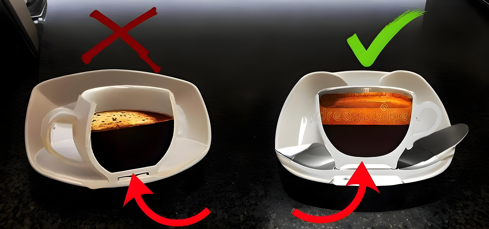

Barista
Mucho gusto, primero quiero decirles que me alegra estar con las personas que aceptaron la enorme responsabilidad de ser Barista, ya que todo negocio tiene su cuerpo y corazón, como los restaurantes el corazón es el Chef, en las escuelas son los Maestros, los hospitales son los Doctores y en este caso las cafeterías su corazón son los Baristas, ellos son los encargados o responsable de hacer que todo funcione.
Un Barista es el especialista en café, capacitado para explotar todo el potencial de los granos consistentemente. Este título es más amplio de lo que uno pensaría, ya que no solo se trata de preparar café. Ellos son los que están a cargo del cuidado y uso correcto de la de maquinaria y son responsable de la reputación del establecimiento, así que este ámbito laboral es de esfuerzo, práctica y sobre todo estudio.

Recordemos que la producción de café es gracia al gran trabajo de muchas personas, de la finca o agricultor que se esfuerzan para entregar un café de calidad que utilizamos, por lo que si el barista no hace un buen trabajo extrayendo el café va a estar botando todo el trabajo de estas personas.
Una parte esencial del barismo poco conocido pero muy importante es el:
Trato con la gente:
Tener buenos modales, buen carisma y poder trasmitir seguridad sin incomodar a la persona tratando que se sienta cómoda aunque no sean conocidos, recordemos que nosotros representamos el establecimiento y a como nos vean ellos, es la imagen que verán en el local.
Tener buena comunicación:
Es importante saber como hablar con el cliente, ya que ellos no nos conocen por consiguiente hay que tener cuidado con lo que hablamos siendo siempre amable pero también es bueno escuchar porque parte de la experiencia es que el cliente se sienta cómodo y seguro, haciendo que la cafetería o lugar donde trabajemos sea una extensión de su lugar de tranquilidad de su rutina cotidiana.
Entender sus necesidades:
Todos los clientes tienen diferentes necesidades, algunos serán intolerante a la lactosa, otros serán diabeticos y otros pueden sufrir de presión alta, y no todos lo dirán por eso es importante preguntar a la hora que te ordenan para evitar cualquier problema así ellos verán la importancia que se le da y eso provocara que ellos quieran volver.
Saber ofrecerle y aconsejarles: Muchos de los clientes sabrán que es lo que quieren pero otros no podrán escoger, recordemos que no todos los clientes saben de café o de nuestro menú y sera nuestro deber explicarle y ofrecerles una bebida con forme sus gustos para así ellos no se arrepientan de realizar la compra y no se sientan incómodos por no conocer del tema.
Espresso
Espresso y su Importancia
El espresso es fundamental en el mundo del café, ya que representa la esencia pura de esta bebida. Es la base sobre la cual se construyen la mayoría de las bebidas con café, a excepción de los métodos de filtrado. En este caso, nos enfocaremos en los aspectos básicos de su preparación, que es esencial para cualquier cafe
3. Si es automático el molino te dará el café necesario pero no siempre es muy exacto, incluso el mejor molino no va a proveer la misma cantidad de café en cada bebida, especialmente cuando las muelas comienzan a sobrecalentarse o a aumentar la humedad en el aire. Medimos el café molido en la canasta antes de preparar los espressos, y también medimos el resultado en líquido.
Una vez empiezas a utilizar pesas, te sorprenderás de toda la variación que existe. Para emparejar usamos el nivelador de café, este gira sobre el filtro y después compactamos con el tamper (Herramienta manual que presiona el café)

4. Hasta sentir que el café bajo llegando a un tope, hay que tener en cuenta la posición con que le harás presión, ya que si lo haces inclinando no habrá un nivel uniforme de café y afectará en la bebida


7. Después está el conocido Espresso .El favoritos de muchos y es la base de casi todas las bebidas de café, este es de unos 25 de extracción y es un balance de sabores.

8. Y por ultimo el Doppio poco conocido este es levemente quemado, menos fuerte y un poco mas diluido, con un tiempo de más de 30 segundos de extracción

Son personas capacitadas para entender a fondo todo del café con el que están trabajando, buscando una receta que nos favorezca, saber modificar las variables al café para poder presentar siempre una excelente bebida, para esto tiene que entender como calibrar las maquinas de las condiciones externas al café que pueden afectarlos como la presión de la maquina, calidad del agua, temperatura de la misma, condición climática del día, la manera correcta de almacenar los granos y sobre todo la higiene.

Para finalizar entendemos que la actitud del barista puede cambiar el día de una persona, los clientes no solo van a una cafetería por el café, llegan por la experiencia, el ambiente y escogen el establecimiento establecimiento para tener reuniones, citas, charlas, reencuentros o simplemente un momento de tranquilidad y todo eso contando con la actitud original, amable y simpática del barista, muchos llegaran a tener preguntas de como es todo este mundo detrás de una taza de café y con una buena conversación con el barista explicando con pasión provocara que el cliente defina la cafetería como especial.

Preparacion de un cafe espresso
1. Antes de preparar el espresso debemos de tener él molino regulado conforme la especificación de la máquina, lo mejor seria usar tazas de fondo redondeados, esta forma favorece la caída del espresso suave y conserva la crema que es un elemento fundamental para mantener los aromas y es la presentación final de una buena extracción

Iniciamos moliendo el café agregando lo necesario al porta filtro.
2. Las canastas del portafiltros son el producto de la experiencia técnica, cada aspecto de su diseño existe por una razón, y cuando los fabricantes proveen unas pautas, es importante seguirlas.
Las canastas vienen de diferentes tamaños dependiendo del peso de café que se utiliza. Respeta la ingeniería usando la cantidad correcta de café molido, si una canasta dice VST 20, entonces utiliza 20 gramos de café si el molino es manual nos podemos ayudar con una pesa digital

5. Hay que hacer presión lo más perpendicular que podamos, para que tengamos un nivel uniforme y lograr extraer perfectamente la esencia del café


6. Y en la maquina ya puesto el porta filtro dejamos correr el agua unos 25 segundos para extraer el espresso, el flujo de café debe ser suave y constante algo que se asemeje mas a una cola de ratón, si es muy rápida no habrá una buena extracción y perderemos sabores, olores y la crema del espresso
A la extracción de café se le conoce como Espresso a la esencia del café , pero hay 4 niveles de intensidad.
La extracción corta se le conoce como Ristreto es de menos de 20 segundos y prácticamente es solo la crema de la extracción.

9. Ya con todo lo anterior podemos empezar a lo siguiente que es aprender a espumar leche para hacer un capuchino

Catador de Vinos
¿Que es un vino?
El Vino es una bebida alcohólica que se hace a partir de la fermentación del jugo o mosto de la uva a través de la acción metabólica de levaduras presente en él. Nace de una plata llamada Vid que es la encargada de dar el fruto de la uva.
Proceso del vino
El proceso, la elaboración y producción del vino consta de 4 faces fundamentales:
1. Prensado
2. Fermentación
3. Embotellado
4. Maduración
Clasificación por edad
Los vinos también se clasifican por su edad o periodo de reposo (Maduración) en bodega antes de salir del mercado:
1. Vinos jóvenes: Son los que no han obtenido ningún tipo de crianza en madera o esta crianza han sido mínima. Son vinos que conservan mucho de las características varietales de la uva y son ideales consumirse en los 12-24 meses después de la vendimia (tiempo de cosecha) estos vinos pueden ser blanco, tintos y rosados
2. Vinos de crianza: Ellos pasan un mínimo de 6 meses en madera y hasta 2 años en botella o también 18 meses en madera y 4 en botella.
3. Vinos de reserva: Mínimo de 12 meses en madera y hasta 3 años en botella.
4. Vinos Gran Reserva: Mínimo de 24 en madera y hasta 5 años en botella
5. Vino Premium: Depende mucho de la naturaleza, algo que caracteriza a este proceso son las añadas discontinuas.
PRNCIPALES UVAS BLANCAS
Chardonnay: Esta uva blanca es la más cultivada en el mudo y con ella se elaboran excelentes vinos blancos y el champagne. Hay diversos tipos de vinos con uvas Chardonnay, por un lado están el que es añejado en barricas de roble envejecidos y por el otro el que se produce en otro tipos de barricas, en ambos casos el sabor de vinos es diferentes lo que tiene mucho que ver es el tiempo que se dejo en barrica. Pese a los diferentes sabores que puede tener un vino Chardonnay este generalmente se distingue por su sabor a frutas tales como bayas y cítricos, los vinos Chardonnay maduros dejan un sabor a mesclas de frutas como piña, guayaba y mango, en cambio los vino Chardonnay jóvenes dejan un sabor a manzana y limón.
Sauvignon Blanc: Es un vino banco generalmente como varietal o elaborado en una sola variedad de uva , esta variedad de uva oriunda (originaria) de Loira y Burdeos en Francia, es una cepa muy resistente por lo que se ha adaptado fácilmente a diversos climas. Esta es una de las razones por la que se ha extendido su cultivos en muchas regiones del mundo y en la que actualmente se elaboran magníficos vinos. Cada zona geográfica donde se cultiva esta uva le imprime un estilo característico a los vinos elaborados por ella marcando la diferencia entre unos y otros. Esta le aporta a los vinos sus diferentes aromas esencialmente cítricos, Herbal y floral.
Pinot Grigio: Es un tipo de vino blanco con la característica de que la coloración de la piel de la uva con que es elaborado es más oscura que otros tipos de uvas blancas, en ocasiones se le confunde con uvas tintas y sobre todo con su pariente más cercano la uva Pinot Noir, de todas maneras cada tipo de uva Pinot Gris es distinta segun el terroir (La temperatura, el suelo, la elevación y el proceso de crecimiento afecta la palatabilidad ¨sabor agradable¨ de un vino). La uva Pinot es originaria de Francia más precisamente de la región de Alsacia, de todas maneras a uva Pinot Gris es la más cultivada en diferentes regiones del mundo, entre ellas destacan los vinos producidos en Alemania ya que la región Alsaciana es limítrofe con el país Germano.
Existen unos termino para definir a los especialistas en el mundo del Vino;
1. VITICULTOR: Es el agricultor de todas las especies de Vino, es el que se encarga de cuidar, tratar, proteger y curar la planta de uva y mantener buena cosecha
2. ENOLOGO: Es el responsable de la creación del vino en todos sus procesos, el que está en la cabeza para cuidar el jugo de la uva en toda la producción hasta lograr obtener un vino de calidad
3. SOMMELIER: Es el asesor y especialista en venta de Vino, él maneja si historia forma de transportarse, de guardarse, servir el vino y conocer sus variedad
Tipos de Vinos
1. Blancos: Es el obtenido a partir de la uva blanca
2. Rosado: Es el obtenido a partir de las uvas tintas a las que se les ha separado parcialmente los hollejos (Piel o cascara)
3. Tintos: Es el obtenido a partir de la uva tinta
4. Espumantes: Es el obtenido a partir de la uva blanca y tintas, cuando se elabora a partir de la uva tinta el hollejo (cascara) se separa del mosto (uva sin cascara). Los espumantes no pasa por la maduración y se agrega una segunda fermentación, esta se puede hacer en dos métodos #1 Campenoise; se embotella y se deja fermentar, 2# Charmat o Granvas; se guarda en tanque de acero inoxidables y se deja fermentar.
PRINCIPALES UVAS TINTAS
Sauvignon: Es una de las mejores variedad de uvas del mundo y por lo tanto hace unos de los tipos de vino tintos más populares. Hay tintos con cuerpo con notas de vainilla y roble, ya que a menudo se envejecen en barricas de madera, también se mesclan con Carbenet Franc y Merlot para crear excelentes vinos.
Malbec: Argentina es sinónimo de Malbec a pesar de ser una variedad de uva originaria de la región de Burdeos en Francia. En nota de cara cuenta con sabor a ciruelas, moras y especias, mientras es un vino fácil de beber, es ideal para el marinaje con carnes rojas y comida con salsa de tomate.
Syrah: Es un dato importante saber que el nombre Syrah proviene de las zonas frías de Francia y la denominación Shiraz proviene de las zonas cálidas de Australia, es una uva que nos regala caracteristica similares a la del Malbec, color rojo intenso, aromas a frutos rojos.
Merlot: Es un vino tinto suave con romas a cereza, ciruela con notas a hierbas, a demas el Erlot es de los taninos más ligeros que el Carbenet Suavignon, es la cuarta variedad de uva cuenta con mayor cobertura en el mundo y se marina excelente con carnes rojas.
Carmenere: La uva Carmenere es exclusiva de chile ya que la cepa Europea fue extinguida en el siglo XlX por la filoxera, la uva Carmenere se consideraba desaparecida allí, hasta que a principios de 1990 un enólogo Francés Jean-Michel 1boursiquot en una cata aseguro lo que estaba probando era uva Carmenere, se descubrió que esta uva aun se cultiva inadvertidamente mezclada con Merlot. Por ende son las características muy similares, ambas su diferencia es el color morado intenso.
Tempranillo: Es de origen español y se caracteriza por poseer un sabor a cuero mezclado con cereza otorgándole a esta bebida una suavidad en su textura pero persistente en acides que persistirá en el paladar por un tiempo prolongado, su color será una mezcla entre malva, naranja y canela
Sangiovese: Se produce en Chianti en la región de la Toscana en Italia aunque también existen excelentes vinos californianos de esta cepa. Es un tipo de vino tinto de cuerpo medio y cuentas con sabores a frutos rojos, es una gran opción de marinaje para comidas Italianas y mediterráneas.
Pinot Noir: Esta variedad tiene una característica que sus taninos son muy suaves con notas de hoja de té, tierra húmeda Y/o cuero, es excelente para maridar con salmón a la parrilla, pollo cordero y comida japonesa.